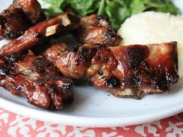

Thai Grilled Pork
Home

Description
Thai grilled pork opular street food in Thailand.
It consists of marinated pork slices skewered on bamboo sticks and grilled over charcoal,
giving it a smoky, slightly caramelized flavor.
Ingrdients
Marinade
- 35g oyster sauce
- 10g seasoning sauce
- 5g black sauce
- 40g white sugar
- 1/2 tsp Chinese chicken powder
- 1/2 tsp white pepper
- 1/2 tsp garlic powder
- 1/2 tsp salt
Others
Directions
- Mix all marinade ingredients until well combined.
- Add pork and let it sit for at least 4 hours or overnight.
- Grill and serve.